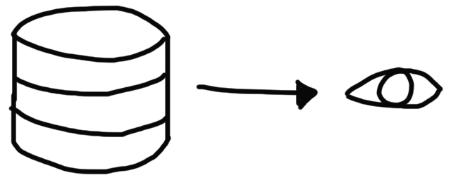
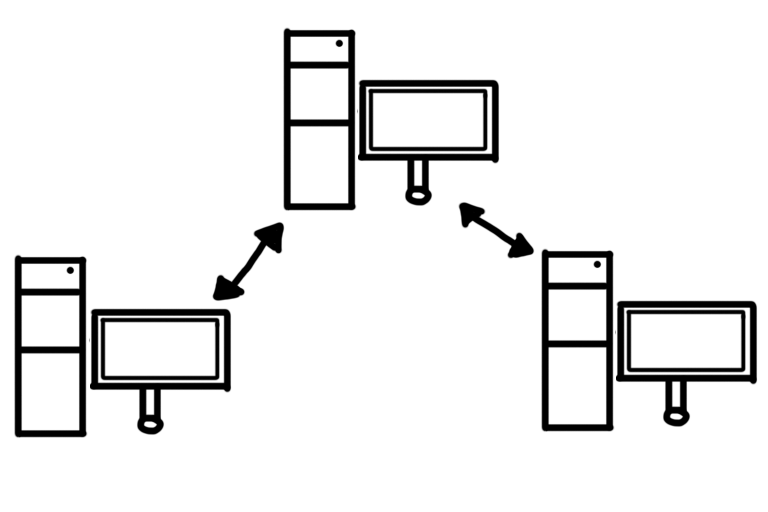
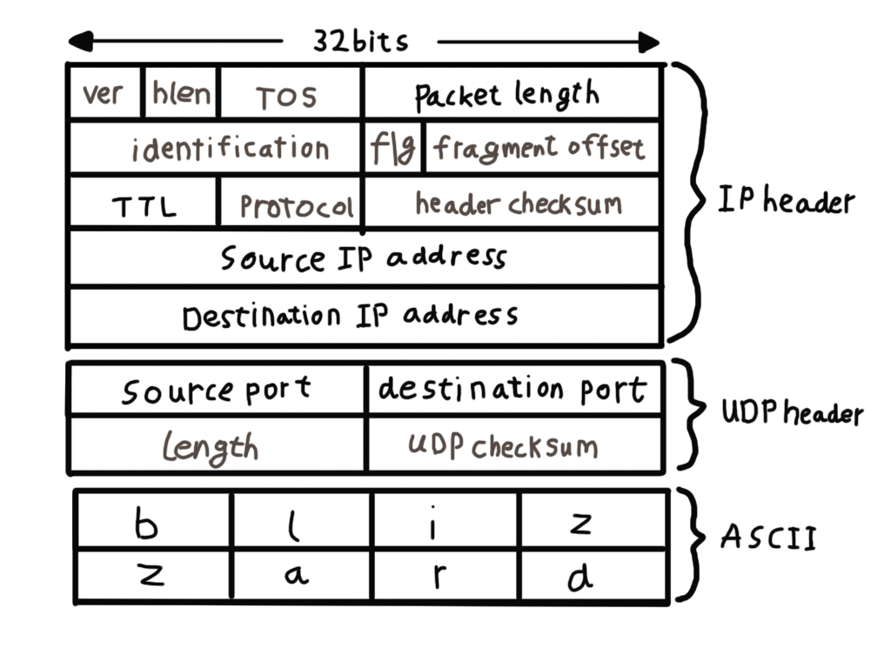

Foreword
This project was made to guide those rather unfamiliar with network engineering to overcome challenges.
The topics are arranged per discipline and include visual or code examples.
Table of Contents
| Introduction |
| Part I: Introducing network engineering |
| Part II: Multiplayer in Unreal Engine 4 |
| Part III: Multiplayer in Unreal Engine using Blueprints |
| Part IV: Multiplayer in Unreal Engine using C++ |
| Part V: Multiplayer in Unity 2019 |
| Bibliography |
Introduction
Multiplayer games are massively popular. With the rise of the battle royale genre, it has become clear that multiplayer will not lose its appeal. Whilst it can create a great experience, faulty networking can ruin a player’s experience. To set up your project for success, a solid networking architecture is needed. Creating such architecture can be time consuming, and leave vulnerability and issues behind if not executed with care. We will therefore discuss common practices to tackle issues of different networking architectures for games. How each will affect the other will be discussed from both a technical and design point of view, including possible drawbacks and advantages regarding game design iteration and performance.
Part I: Introducing network engineering
Essential knowledge for all disciplines.
Chapter 1: Content Management System
Multiplayer games and network application utilize a Content Management System (CMS) to deliver online content. CMS consists of a front- and backend. The backend is a data access layer of an application. This includes databases to store account information, user preferences, and progress. There are companies which deliver the backend as a service, with features such as leaderboards, chat and analytics. The frontend is simply the presentation layer, such as a user interface.

Chapter 2: Network architectures
Multiplayer games made in modern game engines like Unreal Engine use a client-server network architecture. A server is a host, which virtually runs the game and is authorative about world simulation, game rules and player input processing. A client is an instance of the game on the player’s machine. However, there are other network architectures which are used depending on the design of the game.

· A dedicated server is a remote machine that replicates a world by sending and receiving data, it usually doesn't render graphics.

· A listen server is a client. A listen server and player can be in the same instance on the same machine. This is often used on Local Area Networks (LAN).

· When all machines communicate with each other it’s called peer-to-peer. In this case there is no dedicated host.
Chapter 3: Network communication
The server simulates the game in discrete time steps called ticks. During each tick, the server processes incoming user commands, runs a physical simulation step, checks the game rules, and updates all entities. After simulating a tick, the server decides if any client needs an update, which is called synchronisation. In Unreal Engine this results in a packet with replication data, although some engines send snapshots of the current world. A higher tickrate increases the simulation precision, but also requires more processing power and available bandwidth on both server and client.
Chapter 4: Network bandwidth
Bandwidth is basically the capacity of a wired or wireless connection often measured in Megabits per second (Mbps), although some applications such as Steam report network bandwidth in MegaBytes per second (MBps). Unless the server runs on a local connection, network bandwidth is limited. The server can't send a new update packet to all clients for every single change in the world.
Chapter 5: Packets
The client and server communicate with each other by sending small data packets at a high frequency, which is usually 20 to 30 packets per second. In contrast with a single player game, a multiplayer game has to deal with a variety of new problems caused by packet-based communication.

Packets are sent using TCP or UDP. A packet is send to its destination, where it might or might not arrive. A packet consists of 3 headers of each 32 bits in length:
· The IP header: this tells the router which IP address to send the packet to.
· The UDP header: this contains port on which the packet is send.
· The content: this is the actual content of the packet in ASCII, so each character is 1 byte.
Chapter 6: Tickrates
Another important topic of networking is the server tickrate. Just like a higher refresh rate on your monitor or a higher in-game framerate, a higher tickrate on the server will be a smoother experience. However, changing the tickrate throughout the development of a game can result in unexpected behavior, especially when different objects interact. A tickrate is essentially the updates per second of a server without rendering graphics. Games with smaller worlds or competitive gameplay, like Counter Strike: Global Offensive and Overwatch, have a constant tickrate of about 60 Hz. Games with larger worlds have tickrates of about 10 to 30 Hz.
Chapter 7: Protocols
A network uses the Transmission Control Protocol (TCP/IP) connection by default, meaning that each device has a unique IP address to communicate with other machines. A protocol is a set of rules devices utilize for communication. TCP/IP and User Datagram Protocol (UDP) are part of the Open System Interconnection (OSI) model. Each communication process consists of 4 layers. UDP is used to deliver information, while File Transfer Protocol (FTP) is used to deliver files and the Hyper Text Transfer Protocol (HTTP) is used for the World Wide Web. There are two versions of IP protocols, IPv4 and IPv6. Most devices still use IPv4 to communicate using their unique IP address. In some cases a network connection requires the Dynamic Host Configuration Protocol (DHCP) to assign dynamic IP addresses. With DHCP a device can have a different IP address every time it connects to the network. In some systems, the device's IP address can even change while it is still connected.
Chapter 8: Internet Protocol address
https://en.wikipedia.org/wiki/File:Ipv4_address.svg https://en.wikipedia.org/wiki/IP_address So as mentioned previously, an Internet Protocol (IP) address is simply a numerical label to identify a device. An IPv4 address is a shorter version than IPv6, but far more common. IPv4 has about 2^32 uniqie network addresses and IPv6 has 3.4×10^38. Examples of IPv4 addresses are 127.0.0.1 which is a non-routable loopback to your local machine, 192.168.1.1 or 192.168.1.254 which is your router, and 129.41.38.1 which was IBM’s website.
Chapter 9: Name servers
Since IP addresses can be long and confusing to read, name server make it easy to connect using a readable identifier, often called a host name. Name servers are a fundamental part of the Domain Name System (DNS), as they allow people to use domains to query responses.
Chapter 10: Ports
In order for your machine to know which application should receive which data from a connection, your router utilizes ports to identify packets. The range of ports is limited and many ports have already been standardized. Ports between 0 and 1023 are well known ports. Ports between 1024 and 49151 are user ports, which can be used by programs for internal or external communication. Ports between 49152 and 65535 are dynamic ports which are randomly assigned on the client to establish a connection. Examples are port 80 used for HTTP (web) applications, port 25565 used by Minecraft servers, and port 7777 for Unreal Engine games.
Chapter 11: Port forwarding
Unless you have a public IP address, your connection is most likely restricted by Network Address Translation (NAT). NAT is a method of remapping one IP address space into another by modifying network address information in the IP header of packets in a router. This is done to conserve global IPv4 addresses, and to protect private networks. To allow a direct connection between peers, port forwarding can be used to redirect a communication request from one address and port number combination to another while the packets are traversing a network gateway, such as a router or firewall.
Chapter 12: Latency
Network packets take a certain amount of time to travel between the client and the server, that is the half the ping time. This means that the client time is always a little bit behind the server time. Furthermore, client input packets are also delayed on their way back, so the server is processing temporally delayed user commands. In addition, each client has a different network delay which varies over time due to other background traffic and the client's framerate. These time differences between server and client causes logical problems, becoming worse with increasing network latencies. In fast-paced action games, even a delay of a few milliseconds can cause laggy gameplay and make it hard to hit other players or interact with moving objects.
Chapter 13: Common practices
All these topics affect the player's multiplayer experience. We will therefore discuss common practices to tackle these issues.
Chapter 13.1: Entity interpolation
If the entities in the world were only rendered at the positions received by the server, moving objects and animation would look inconsistent. Dropped packets would also cause noticeable glitches. The trick to solve this problem is to go back in time for rendering, so positions and animations can be continuously interpolated between two recently received snapshots. With a tickrate of 20, a new update arrives about every 50 milliseconds. If the client render time is shifted back by 50 milliseconds, entities can be always interpolated between the last received snapshot and the snapshot before that.
Chapter 13.2: Input prediction
A delay between player input and corresponding visual feedback creates a strange, unnatural feeling and makes it hard to move or aim precisely. Client-side input prediction is a way to remove this delay and let the player's actions feel more instant. Instead of waiting for the server to update your own position, the local client just predicts the results of its own user commands. Therefore, the client runs exactly the same code and rules the server will use to process the user commands. After the prediction is finished, the local player will move instantly to the new location while the server still sees him at the old place. If the client receives a packet a few milliseconds later it will compare the predicted positions. If there is a big difference the client will interpolate between the error and result. This is why in some games you might see players walk in an odd direction and disappear when a packet is received.
Chapter 13.3: Lag compensation
Game data is compressed using delta compression to reduce network load. That means the server doesn't send a full world snapshot each time, but rather only changes, called a delta snapshot, that happened since the last acknowledged update. With each packet sent between the client and server, acknowledge numbers are attached to keep track of their data flow. Usually full snapshots are only sent when a game starts or a client suffers from heavy packet loss for a couple of seconds.
Chapter 13.4: Entity prioritization
When it comes to games with large worlds or a high number of consistent players, it becomes even more challenging to maintain a stable gameplay experience. Games with lots of entities to replicate to all connected clients, with often large worlds, have lower tickrates and only replicate entities close to a player using delta snapshots. Some games take it further by having varying tickrates for different entities or systems, such as AI with lower tickrates.
Chapter 13.4: Packet reliability
Reliable or unreliable packets. Difference is if it has to arrive in the right sequence.
Part II: Multiplayer in Unreal Engine 4
Essential knowledge for all disciplines.
Chapter 1: Setting up
Unreal Engine has an easy way to test connections. This is done by setting the Number of Players. When you press Play with New Editor Window (PIE), Unreal Engine will perform a few steps over a network connection:
· Load the Map
· Specify a Game Mode
· Spawn a Player Controller and a Pawn.
Markdown
Markdown is a lightweight and easy-to-use syntax for styling your writing. It includes conventions for
Syntax highlighted code block
# Header 1
## Header 2
### Header 3
- Bulleted
- List
1. Numbered
2. List
**Bold** and _Italic_ and `Code` text
[Link](url) and